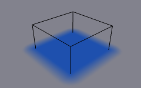
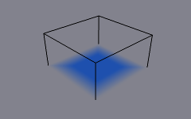

Пензель -- Brush¶
Reference
| Panel: | |
|---|---|
| Type: | Пензель -- Brush |
The Brush type makes object apply paint on the canvas.
Головна панель пензля.
На першій, панелі пензля, ви можете визначати, як пензель впливатиме на забарвлені поверхні полотна.
- Абсолютне Альфа -- Absolute Alpha
- Ця устава лімітує вплив альфа пензля. При її вимкненні пензель буде «додаватися» на поверхню знову і знову з кожним кадром, збільшуючи альфа і, звідси вплив пензля на полотно. У багатьох випадках, однак, краще не збільшувати альфа пензля, якщо вона вже є на рівні пензлів.
- Стирати Малювання -- Erase Paint
- Makes brush dissolve existing paint instead of adding it.
- Вологість -- Wetness
- Визначає те, наскільки «вологим» буде нове малювання. Вологість є видимою на «карті вологості» поверхні «Малювання». Швидкість ефектів «Стікання» -- "Drip" та «Розтікання» -- "Spread" також залежить від того, наскільки вологим є малювання.
- Вжити Матеріал Об'єкта -- Use Object Material
При увімкненні ви можете визначати використовуваний матеріал як колір пензля. Це включає базовий колір матеріалу та усі текстури, пов'язані з ним, що у підсумку відповідають зображеному, рендереному дифузному, розсіяному кольору. Ця опція доступна тільки, коли обрано зображувач, рендерер "Blender Internal".
Інакше, ви можете визначати колір для пензля за допомогою вибірника кольору нижче неї.
- Альфа -- Alpha
- Визначає альфа пензля або видимість. Остаточна вологість також визначається альфа.
Source¶
Reference
| Type: | Пензель -- Brush |
|---|---|
| Panel: |

Панель джерела малювання.
Джерело Малювання -- Paint Source¶
Устава «Джерело Малювання» -- Paint Source дозволяє вам задавати, як буде визначено вплив/перетин пензля.
- Об'єм Сіті -- Mesh Volume
Пензель буде впливати на усі точки поверхні всередині об'єму сіті.

Джерело: «Об'єм Сіті» -- Mesh Volume.
- Близькість -- Proximity
Використовує тільки визначену відстань до найближчої точки на поверхні сіті пензля. Зауважте, що точки всередині об'єму не обов'язково будуть задіюватися, оскільки вони не є найближчими до поверхні.

Джерело: «Близькість» -- Proximity. Пензель впливає на усі пікселі полотна навколо нього.
- Об'єм Сіті + Близькість -- Mesh Volume + Proximity
Так само як для типу «об'єм сіті», але також впливає на визначену відстань.
- Внутрішня Близькість -- Inner Proximity
- Застосовує близькість всередині об'єму сіті.
- Обернено Об'єму -- Negate Volume
- Обертає альфа пензля у межах об'єму сіті.
Тип джерела пензля «Об'єм Сіті + Близькість» без додаткових устав.
Внутрішня Близькість -- Inner Proximity. Спад Близькості тепер видно всередині об'єму.

Обернено Об'єму -- Negate Volume. Внутрішній бік об'єму став абсолютно прозорим.

Опції Inner Proximity та Negate Volume обидві увімкнені.
- Центр Об'єкта -- Object Center
Замість обчислення близькості до сіті об'єкта пензля, яке може бути досить повільним у деяких випадках, розраховується відстань тільки до його центра. Це набагато швидше і часто досить достатньо.

Джерело: «Центр Об'єкта» -- Object Center.
- Система Частинок -- Particle System
Вплив пензля визначається частинками з обраної системи частинок.
- Particle Effect: Solid Radius
- ToDo 2.62.
- Use Particle Radius
- Smooth Radius
- ToDo 2.62.

Джерело: «Система Частинок» -- Particle System.
Загальні опції¶
- Відстань Малювання -- Paint Distance
- ToDo 2.62.
- Проектування -- Project
Проектує пензель на полотно з визначеної відстані. Базово це може розглядатися як «вирівняна за напрямком» близькість.

Опція «Проектування» -- Project увімкнена. Подивіться, як пензель впливає на полотно тільки у напрямку нормалі.
- Спад -- Falloff
- Тип спаду може бути «згладженим», «різким» або відповідно до колірного градієнта.
Velocity¶
Reference
| Type: | Пензель -- Brush |
|---|---|
| Panel: |
Панель «Скорість» -- Velocity.
Ця панель показує опції пензля, що базуються на скорості об'єкта.
Зверху ви маєте колірний градієнт та кілька пов'язаних з ним устав. Базово колірний градієнт представляє значення скорості пензля: ліва сторона є нульовою скорістю, а права сторона -- «максимальною скорістю». Скорість вимірюється в «Одиницях Blender на кадр».
Стяги вище можуть використовуватися для визначення впливу колірного градієнта.
- Множити на Альфа -- Multiply Alpha
- Використовує альфа значення колірного градієнта залежно від поточної скорості та множить його на альфа пензля.
- Замінити Колір -- Replace Color
- Заміняє колір пензля значенням з Віджет колірного градієнта.
- Множити на Глибину -- Multiply Depth
- Множить ефект «перетинання глибини» пензля. Базово ви можете коригувати зміщення та силу хвилі залежно від скорості пензля.
- Розмазання -- Do Smudge
Вмикання опції «Розмазання» робить наявні кольори пензля «розмазаними» (або «розмитими») на поверхні у ході його руху. Сила цього ефекту може визначатися властивістю «Сила Розмазання» -- Smudge Strength.
Навіть тоді, коли розмазання увімкнене, пензель все ще дає звичайний ефект малювання. Якщо ви хочете чисте розмазання пензля, то використайте нульове альфа. Також можливо мати увімкненою опцію Erase разом з опцією розмазання.
Waves¶
Reference
| Type: | Пензель -- Brush |
|---|---|
| Panel: |
Панель пензля «Хвилі» -- Waves
Ця панель використовується для коригування впливу пензля на поверхні типу «Хвиля».
- Тип Хвилі -- Wave Type
Select what effect the brush creates in the wave simulation.
- Зміна Глибини -- Depth Change
Ця опція дає створення пензлем хвиль, коли глибина перетинання з поверхнею змінюється у даній точці. Якщо пензель залишається нерухомим, то він не має впливу.
Використання від'ємного значення "Factor" з цим типом може створювати гарний «кільватер», «слід» за рухомими об'єктами, як кораблі.
- Перешкода -- Obstacle
- Постійно впливає на поверхню при перетинанні. Хвилі також відбиваються цим типом пензля. Однак, через природу алгоритму імітації хвилі цей тип створює неприродну «вм'ятину» у поверхні, якщо пензель залишається нерухомим.
- Сила -- Force
- Directly affects the velocity of wave motion. Therefore the effect is not one-to-one with brush intersection depth, yet the force strength depends on it.
- Лише Відбиття -- Reflect Only
- Цей тип сам не має видимого ефекту на поверхні, а відбиває хвилі, що вже є на поверхні.
- Фактор -- Factor
- Коригує, наскільки сильно «глибина» пензля впливає на імітацію. Ви можете також вживати від'ємні значення для виштовхування води уверх замість уштовхування вниз.
- Затиск Хвиль -- Clamp Waves
- У деяких випадках пензель рухається дуже глибоко всередині поверхні, псуючи усію імітацію. Ви можете використовувати цю уставу для «лімітування» впливу тільки певною глибиною.